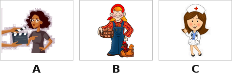
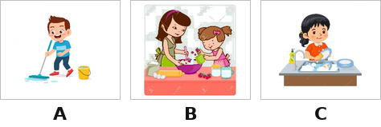
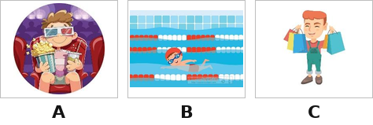
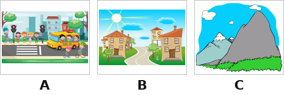

Hello, my name is Emma. I am 9 years old. I am a student. My mother is a (1) ______ She works in a (2) ______ My mother loves to take care of old people. My father is a (3) ______ He helps protect the town people. My older sister is an (4) ______ She works in an office. They all love their jobs.
Nhập thông tin để hệ thống ghi nhận kết quả.
Bạn có thêm 5 phút để hoàn tất. Hết 5 phút bài sẽ tự động nộp.
Hành vi này đã được ghi nhận. Hãy quay lại chế độ toàn màn hình để tiếp tục làm bài.